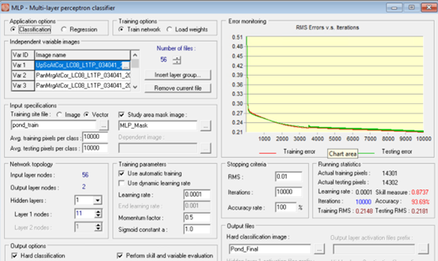
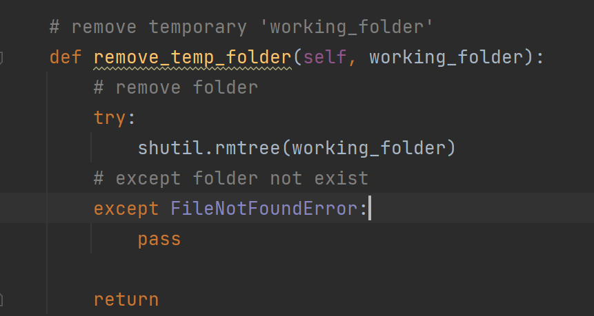

Coastal Habitat Mapping: Mangrove and Pond Aquaculture Conversion
Remote Sensing Research Assistant Internship
Working as remote-sensing research assistant in Clark Lab, I have involved in Automation team and Map team since Jan 2022. As a partnership with the Gordon and Betty Moore Foundation, Coastal Habitats Mapping project creates landcover map for the years 1999, 2014, 2018 and 2020 around the world. The result shows in Brackish Pond Aquaculture and Coastal Wetlands interactive web map
Image Classification
The landcover maps are based on Landsat imagery upsampled to 15 m through pan merge. Classifications created by using machine learning algorithms with supervised classifications. Pond aquaculture and water classes are used Multi-Layer Perceptron (MLP) neural network; mangrove and wetland classes are used Mahalanobis Typicality algorithm.
Inprove automation procedure
My responsibility is to improve automation procedure, preprocessing 2020 data and running machine learning algorithm to predict 2022 land cover, by writing SQL and Python scripts. I wrote a Python script to automate deleting all temprary files after mapping process. As a result, people doesn't need to open folder and delete temprary files anymore.
